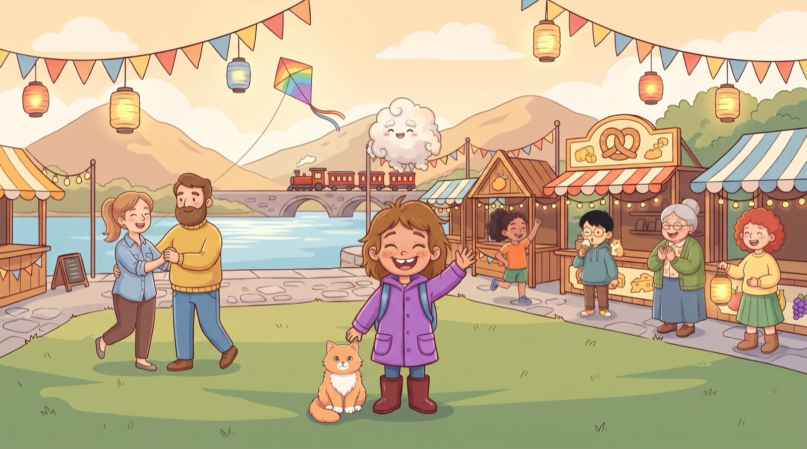

Lumina: The Chalk Hero · iPhone & iPad · Stand / Last updated: 26.10.2026

Kurz gesagt: Lumina sammelt keine Daten. Die App ist für Kinder von 6 bis 8 Jahren gemacht und funktioniert vollständig ohne Internet.
Boris Stiner, Schweiz · E-Mail: boris.stiner@gmail.com
Keine. Lumina erhebt, speichert, überträgt oder verkauft keine personenbezogenen Daten – weder von Kindern noch von Erwachsenen. Insbesondere:
Der Spielstand (gespielte Folgen, gesammelte Sterne, Sticker, Farben der Heldin, Sprache und Einstellungen) wird nur lokal auf dem Gerät gespeichert. Wir haben keinen Zugriff darauf. Beim Löschen der App wird er vollständig entfernt.
Folge 1 ist gratis. Weitere Folgen können im Elternbereich gekauft werden, der durch eine Eltern-Sperre geschützt ist. Käufe werden ausschliesslich von Apple über den App Store abgewickelt; es gelten die Datenschutzbestimmungen von Apple. Wir erhalten dabei keine persönlichen Daten, sondern nur die anonyme Bestätigung, dass ein Kauf auf diesem Gerät gültig ist.
Lumina ist in der Kategorie „Kinder“ des App Store. Weil wir keine Daten erheben, werden auch keine Daten von Kindern erhoben, verwendet oder weitergegeben. Käufe, Bewertungen und Links aus der App heraus sind nur im Elternbereich hinter einer Eltern-Sperre erreichbar.
Da wir keine personenbezogenen Daten verarbeiten, gibt es nichts, was wir auskunften, berichtigen oder löschen könnten. Für Fragen zum Datenschutz (DSG, DSGVO, COPPA) erreichen Sie uns jederzeit unter der oben genannten E-Mail-Adresse. Wenn Sie uns eine E-Mail schreiben, verwenden wir Ihre Adresse nur, um zu antworten.
Ändert sich etwas an dieser Erklärung, aktualisieren wir diese Seite und das Datum oben.
In short: Lumina collects no data. The app is made for children aged 6 to 8 and works entirely offline.
Boris Stiner, Switzerland · Email: boris.stiner@gmail.com
None. Lumina does not collect, store, transmit or sell any personal data, from children or from adults. In particular:
Progress (episodes played, stars, stickers, hero colours, language and settings) is stored only locally on the device. We have no access to it. Deleting the app removes it completely.
Episode 1 is free. More episodes can be bought in the Parent Area, which is protected by a parental gate. Purchases are handled entirely by Apple through the App Store and are subject to Apple's privacy policy. We receive no personal data, only an anonymous confirmation that a purchase is valid on this device.
Lumina is listed in the App Store Kids category. Because we collect no data, no data from children is collected, used or shared. Purchases, ratings and any links out of the app are only reachable in the Parent Area behind a parental gate.
Since we process no personal data, there is nothing for us to disclose, correct or delete. For any privacy question (Swiss FADP, GDPR, COPPA) you can reach us at any time at the email address above. If you email us, we use your address only to reply.
If anything in this policy changes, we update this page and the date at the top.
Deutsch: Fragen, Probleme oder Ideen? Schreiben Sie an boris.stiner@gmail.com, wir antworten in der Regel innerhalb von zwei Tagen.
English: Questions, problems or ideas? Email boris.stiner@gmail.com; we usually reply within two days.
© 2026 Boris Stiner